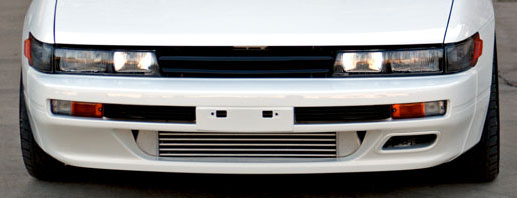

SR Swap Resource Site
Time to step into the world of JDM engines? This sit will help you along the way...
SR Swap 101
My end all s13 to s13 swap page So you think you’re ready to be “Mad JDM-Tyte”? This web page will provide you with everything you need to get the engine in the car and running. It’s no secret the USDOT doesn’t want us to have any fun with our cars, so we all drool over what the JDM and EDM markets have to offer. Lucky for all of us who love the performance factors that the JDM S-Chassis has to offer there has been a grey line drawn that we should all be so inclined to cross. Redtop Valve Cover Before you start your swap or even purchase this motor, please make sure that you will still be “legal” in your state. Sorry California you’re out, you simply cannot pass state regulations with this zero U.S. emissions compliant motor… Now onto the fun stuff, say good-bye to your wives, girlfriends, boyfriends, and any other loved ones you may have had; getting involved with a hobby like this is a sure-fired way to only have room for one love in your life…Your car… Now let’s lighten up that wallet!!!